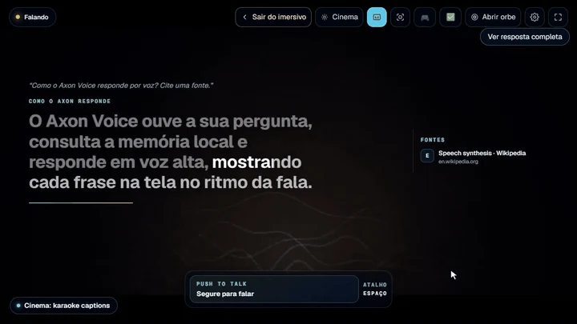
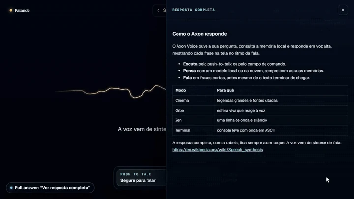
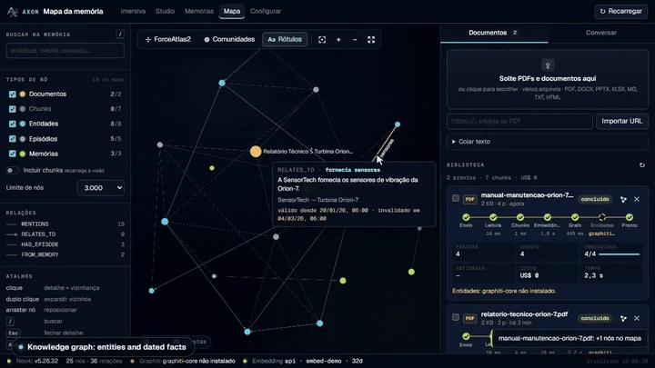
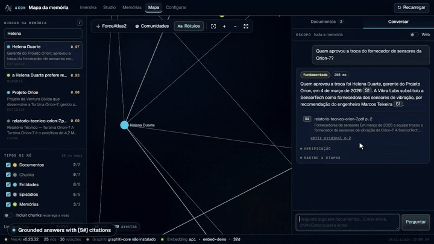

D-01 · FONTES
Uma resposta precisa ser conferível.
A interface expõe as referências e permite abrir o trecho. Isso dá ao usuário uma forma de avaliar a resposta, além da fluência do texto.
M-05Estudo de caso · projeto independente
Conversar com os seus documentos.
Conferir a origem de cada resposta.
Um assistente pessoal que recebe voz ou texto, consulta documentos e memórias e responde com referências. A fala chega por frases; o contexto pode vir de uma busca vetorial ou de fatos conectados em um grafo.
Protótipo individual · execução local ou com modelos na nuvem · repositório privado

A-01O produto
O objetivo é manter o fluxo de uma conversa sem perder a possibilidade de conferir de onde veio cada informação.



A-02Veja o aplicativo
3:31 de interface, voz, documentos, memória e fontes, com narração. Os dois trechos com eco são a própria voz do Axon respondendo. O vídeo só começa quando você der play.
Como a gravação foi feita: o roteiro do repositório usa provedores simulados, chaves fictícias e uma base Neo4j temporária com dados de exemplo. Demonstra os fluxos da interface; não mede qualidade, latência ou custo de modelos reais.
Prefere ler? As seções desta página descrevem o fluxo e as decisões sem depender do áudio. A narração foi gerada com a voz Jarvis do Fish Audio, a mesma que o Axon usa para falar. Abrir o vídeo diretamente ↗
A-03Arquitetura
Navegador, orbe ou interface móvel enviam voz ou texto ao servidor Python. A fronteira HTTP verifica origem, formato, token e limites de requisição.
Memória vetorial em FAISS, busca lexical, base de documentos e grafo em Neo4j fornecem contexto. A fusão RRF combina posições dos resultados, em vez de comparar diretamente pontuações de fontes diferentes.
O fluxo corretivo em LangGraph recupera, avalia e usa o contexto para responder com citações. Quando o material é insuficiente, o caminho previsto é se abster, em vez de completar a lacuna como se fosse fato.
A tela recebe a resposta progressivamente. Frases seguem para a síntese de voz e entram em uma fila de reprodução. A legenda usa uma versão legível do texto, separada da normalização própria da fala.
Uma fila trata memória e fatos elegíveis. A memória vetorial e o grafo têm papéis diferentes; o grafo registra afirmações do usuário com contexto temporal. Respostas do próprio Axon não entram como fatos do usuário.
Descrição baseada no README e nos módulos do projeto atual. A arquitetura não representa uma garantia de acerto em toda conversa.
A-04Decisões técnicas
D-01 · FONTES
A interface expõe as referências e permite abrir o trecho. Isso dá ao usuário uma forma de avaliar a resposta, além da fluência do texto.
D-02 · MEMÓRIA
O grafo distingue afirmações do usuário de perguntas e respostas geradas. As relações incluem datas, porque um fato pode deixar de valer. Filtros ajudam, mas não substituem avaliações de precisão da memória.
D-03 · VOZ
Enviar frases para a voz durante o streaming reduz a espera percebida. O desafio é preservar ordem, cancelamento e coerência entre o que se ouve e o que se lê.
D-04 · EXECUÇÃO
O projeto suporta fornecedores locais e remotos. Usar uma opção na nuvem exige considerar o que é enviado a ela: “local-first” não significa que toda configuração mantenha todos os dados no dispositivo.
A-05Estado e limites
O Axon é um protótipo para uso pessoal. Não apresento usuários de produção, clientes ou disponibilidade comercial como resultado deste projeto.
O vídeo documenta interface e integração de fluxos com serviços simulados. Não é uma demonstração pública conectada a modelos reais, nem um benchmark de recuperação ou fala.
Precisão do contexto recuperado, seleção do que aprender e redução de ruído seguem como áreas de avaliação e melhoria. Ter um grafo e citações não elimina respostas incorretas.
Windows é a plataforma mais exercitada segundo a documentação. Modelos, voz e hardware mudam a experiência. Serviços externos recebem os dados necessários às funções habilitadas.
O repositório inclui testes e um roteiro reproduzível de demonstração. Esta página não publica uma contagem de testes como se fosse uma nova execução verificada ou uma taxa de sucesso em produção.
O repositório não está aberto ao público. Posso apresentar trechos, decisões e uma demonstração em entrevista, respeitando os dados e credenciais do ambiente.